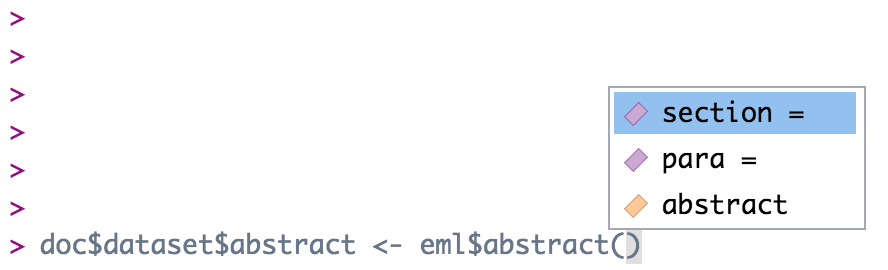

Chapter 4 Editing EML
This chapter is a practical tutorial for using R to read, edit, write, and validate EML documents. Much of the information here can also be found in the vignettes for the R packages used in this section (e.g. the EML package).
4.1 Get package and EML
Before we look more in depth at EML, we first need to load your data package into R. After setting your node, use the following commands to load the package:
After loading the package, you can also load the EML file into R using the following command:
Note that we named the object doc. This is a good generic name to use for EML documents. The generic name eml should not be used - as the EML package ships with an eml function, which can cause namespace issues in your environment if you have an object also called eml.
Tip to always have the most recent resource map.
When editing data packages, you always want to be working with the most recent update. To ensure you have the most recent resource map, you can use the following commands:
rm_pid_original <- "your_original_resource_map_pid"
all_rm_versions <- get_all_versions(adc_test, rm_pid_original)
rm_pid <- all_rm_versions[length(all_rm_versions)]
print(rm_pid)4.2 Edit an EML element
There are multiple ways to edit an EML element.
4.2.1 Edit EML with strings
The most basic way to edit an EML element would be to navigate to the element and replace it with something else. Easy!
For example, to change the title one could use the following command:
If the element you are editing allows for multiple values, you can pass it a list of character strings. Since a dataset can have multiple titles, we can do this:
However, this isn’t always the best method to edit the EML, particularly if the element has sub-elements.
4.2.2 Edit EML with the “EML” package
To edit a section where you are not 100% sure of the sub-elements, using the eml$elementName() helper functions from the EML package will pre-populate the options for you if you utilize the RStudio autocomplete functionality. The arguments in these functions show the available slots for any given EML element. For example, typing doc$dataset$abstract <- eml$abstract()<TAB> will show you that the abstract element can take either the section or para sub-elements.

This inserts the abstract with a para element in our dataset, which we know from the EML schema is valid.
Note that the above is equivalent to the following generic construction:
The eml() family of functions provides the sub-elements as arguments, which is extremely helpful, but functionally all it is doing is creating a named list, which you can also do using the list function.
4.2.3 Edit EML with objects
A final way to edit an EML element would be to build a new object to replace the old object. To begin, you might create an object using an eml helper function. Let’s take keywords as an example. Sometimes keyword lists in a metadata record will come from different thesauruses, which you can then add in series (similar to the way we added multiple titles) to the element keywordSet.
We start by creating our first set of keywords and saving it to an object.
kw_list_1 <- eml$keywordSet(keywordThesaurus = "LTER controlled vocabulary",
keyword = list("bacteria", "carnivorous plants", "genetics", "thresholds"))Which returns:
$keyword
$keyword[[1]]
[1] "bacteria"
$keyword[[2]]
[1] "carnivorous plants"
$keyword[[3]]
[1] "genetics"
$keyword[[4]]
[1] "thresholds"
$keywordThesaurus
[1] "LTER controlled vocabulary"We create the second keyword list similarly:
kw_list_2 <- eml$keywordSet(keywordThesaurus = "LTER core area",
keyword = list("populations", "inorganic nutrients", "disturbance"))Finally, we can insert our two keyword lists into our EML document just like we did with the title example above, but rather than passing character strings into list(), we will pass our two keyword set objects.
Note that you must use the function list here and not the c() function. The reasons for this are complex, and due to some technical subtlety in R - but the gist of the issue is that the c() function can behave in unexpected ways with nested lists, and frequently will collapse the nesting into a single level, resulting in invalid EML.
4.3 Edit attributeLists
Attributes are stored in an attributeList. When editing attributes in R, you need to create one to three objects:
{kind=link}
- A data.frame of attributes
- A data.frame of custom units (if applicable)
- A data.frame of factors (if applicable)
Attributes can exist in EML for dataTable, otherEntity, and spatialVector data objects. Please note that submitting attribute information through the website will store them in an otherEntity object by default. We prefer to store them in a dataTable object for tabular data or a spatialVector object for spatial data.
To edit or examine an existing attribute table already in an EML file, you can use the following commands, where i represents the index of the series element you are interested in. Note that if there is only one item in the series (ie there is only one dataTable), you should just call doc$dataset$dataTable, as in this case doc$dataset$dataTable[[1]] will return the first sub-element of the dataTable (the entityName)
# If they are stored in an otherEntity (submitted from the website by default)
attributeList <- EML::get_attributes(doc$dataset$otherEntity[[i]]$attributeList)
# Or if they are stored in a dataTable (usually created by a datateam member)
attributeList <- EML::get_attributes(doc$dataset$dataTable[[i]]$attributeList)
# Or if they are stored in a spatialVector (usually created by a datateam member)
attributeList <- EML::get_attributes(doc$dataset$spatialVector[[i]]$attributeList)
attributes <- attributeList$attributes
print(attributes)4.3.1 Edit attributes
Attribute information should be stored in a data.frame with the following columns:
- attributeName: The name of the attribute as listed in the csv. Required. e.g.: “c_temp”
- attributeLabel: A descriptive label that can be used to display the name of an attribute. It is not constrained by system limitations on length or special characters. Optional. e.g.: “Temperature (Celsius)”
- attributeDefinition: Longer description of the attribute, including the required context for interpreting the
attributeName. Required. e.g.: “The near shore water temperature in the upper inter-tidal zone, measured in degrees Celsius.” - measurementScale: One of: nominal, ordinal, dateTime, ratio, interval. Required.
- nominal: unordered categories or text. e.g.: (Male, Female) or (Yukon River, Kuskokwim River)
- ordinal: ordered categories. e.g.: Low, Medium, High
- dateTime: date or time values from the Gregorian calendar. e.g.: 01-01-2001
- ratio: measurement scale with a meaningful zero point in nature. Ratios are proportional to the measured variable. e.g.: 0 Kelvin represents a complete absence of heat. 200 Kelvin is half as hot as 400 Kelvin. 1.2 meters per second is twice as fast as 0.6 meters per second.
- interval: values from a scale with equidistant points, where the zero point is arbitrary. This is usually reserved for degrees Celsius or Fahrenheit, or latitude and longitude coordinates, or any other human-constructed scale. e.g.: there is still heat at 0° Celsius; 12° Celsius is NOT half as hot as 24° Celsius.
- domain: One of:
textDomain,enumeratedDomain,numericDomain,dateTime. Required.- textDomain: text that is free-form, or matches a pattern
- enumeratedDomain: text that belongs to a defined list of codes and definitions. e.g.: CASC = Cascade Lake, HEAR = Heart Lake
- dateTimeDomain:
dateTimeattributes - numericDomain: attributes that are numbers (either
ratioorinterval)
- formatString: Required for
dateTime, NA otherwise. Format string for dates, e.g. “DD/MM/YYYY”. - definition: Required for
textDomain, NA otherwise. Definition for attributes that are a character string, matches attribute definition in most cases. - unit: Required for
numericDomain, NA otherwise. Unit string. If the unit is not a standard unit, a warning will appear when you create the attribute list, saying that it has been forced into a custom unit. Use caution here to make sure the unit really needs to be a custom unit. A list of standard units can be found here. - numberType: Required for
numericDomain, NA otherwise. Options arereal,natural,whole, andinteger.- real: positive and negative fractions and integers (…-1,-0.25,0,0.25,1…)
- natural: non-zero positive integers (1,2,3…)
- whole: positive integers and zero (0,1,2,3…)
- integer: positive and negative integers and zero (…-2,-1,0,1,2…)
- missingValueCode: Code for missing values (e.g.: ‘-999’, ‘NA’, ‘NaN’). NA otherwise. Note that an NA missing value code should be a string, ‘NA’, and numbers should also be strings, ‘-999.’
- missingValueCodeExplanation: Explanation for missing values, NA if no missing value code exists.
You can create attributes manually by typing them out in R following a workflow similar to the one below:
attributes <- data.frame(
attributeName = c('Date', 'Location', 'Region','Sample_No', 'Sample_vol', 'Salinity', 'Temperature', 'sampling_comments'),
attributeDefinition = c('Date sample was taken on', 'Location code representing location where sample was taken','Region where sample was taken', 'Sample number', 'Sample volume', 'Salinity of sample in PSU', 'Temperature of sample', 'comments about sampling process'),
measurementScale = c('dateTime', 'nominal','nominal', 'nominal', 'ratio', 'ratio', 'interval', 'nominal'),
domain = c('dateTimeDomain', 'enumeratedDomain','enumeratedDomain', 'textDomain', 'numericDomain', 'numericDomain', 'numericDomain', 'textDomain'),
formatString = c('MM-DD-YYYY', NA,NA,NA,NA,NA,NA,NA),
definition = c(NA,NA,NA,'Sample number', NA, NA, NA, 'comments about sampling process'),
unit = c(NA, NA, NA, NA,'milliliter', 'dimensionless', 'celsius', NA),
numberType = c(NA, NA, NA,NA, 'real', 'real', 'real', NA),
missingValueCode = c(NA, NA, NA,NA, NA, NA, NA, 'NA'),
missingValueCodeExplanation = c(NA, NA, NA,NA, NA, NA, NA, 'no sampling comments'),
stringsAsFactors = FALSE)However, typing this out in R can be a major pain. Luckily, there is a Shiny app that you can use to build attribute information. You can use the app to build attributes from a data file loaded into R (recommended as the app will auto-fill some fields for you), to edit an existing attribute table, or to create attributes from scratch. Use the following commands to create or modify attributes (these commands will launch a Shiny app in your web browser):
# From data (recommended)
datamgmt::create_attributes_table(data = data)
# From an existing attribute table
datamgmt::create_attributes_table(attributes_table = attributes_table)
# From scratch
datamgmt::create_attributes_table()Once you are done editing a table in the app, click the Print button to print text of a code that will build a data.frame in R. Copy that code and assign it to a variable in your script (e.g. attributes <- data.frame(...)).
For simple attribute corrections, datamgmt::edit_attribute() allows you to edit the slots of a single attribute within an attribute list.
4.3.2 Edit custom units
EML has a set list of units that can be added to an EML file. These can be seen by using the following code:
If you have units that are not in the standard EML unit list, you will need to build a custom unit list. A unit typically consists of the following fields:
- id: The
unit id(ids are camelCased) - unitType: The
unitType(runView(standardUnits$unitTypes)to see standardunitTypes) - parentSI: The
parentSIunit (e.g. for kilometerparentSI= “meter”) - multiplierToSI: Multiplier to the
parentSIunit (e.g. for kilometermultiplierToSI= 1000) - name: Unit abbreviation (e.g. for kilometer
name= “km”) - description: Text defining the unit (e.g. for kilometer
description= “1000 meters”)
Additionally, datamgmt::create_attributes_table() will tell you if each of your units are standard or not. If your unit is not standard, you should use the following code to help auto-generate a custom unit:
Note that datamgmt::create_attributes_table() calls datamgmt::return_eml_units() for you! datamgmt::return_eml_units() will auto-generate many of these fields for you (but don’t just assume the auto-generation will be perfect; always ensure the auto-generation correctly handles your unit.)
4.3.3 Edit factors
For attributes that are enumeratedDomains, a table is needed with three columns: attributeName, code, and definition.
- attributeName should be the same as the
attributeNamewithin the attribute table and repeated for all codes belonging to a common attribute. - code should contain all unique values of the given
attributeNamethat exist within the actual data. - definition should contain a plain text definition that describes each code.
There is a tab in the datamgmt::create_attributes_table() app that will help you build factors.
If you need to build factors by hand, you can use named character vectors and then convert them to a data.frame as shown in the example below. In this example, there are two enumerated domains in the attribute list - “Location” and “Region”.
Location <- c(CASC = 'Cascade Lake', CHIK = 'Chikumunik Lake', HEAR = 'Heart Lake', NISH = 'Nishlik Lake' )
Region <- c(W_MTN = 'West region, locations West of Eagle Mountain', E_MTN = 'East region, locations East of Eagle Mountain')The definitions are then written into a data.frame using the names of the named character vectors and their definitions.
4.3.4 Finalize attributeList
Once you have built your attributes, factors, and custom units, you can add them to EML objects. Attributes and factors are combined to form an attributeList using the following command:
This attributeList must then be added to a dataTable. Custom units are added to additionalMetadata using the following command:
4.4 Set physical
To set the physical aspects of a data object, use the following commands to build a physical object from a data PID that exists in your package. Remember to set the member node to test.arcticdata.io !
Alternatively, you can set the physical of a data object not yet in your package by simply inputting the data PID:
The physical must then be assigned to the data object.
A final, but not recommended option, is to set the physical by hand. To do so, one can use a workflow similar to the one below. However, the far superior workflow is to publish or update your data first and then use pid_to_eml_physical() to set the physical.
id <- 'your_data_pid' # this should be an actual PID
path <- '~/your/data/path' # path to data table
physical <- EML::set_physical(objectName = 'your_file_name',
size = as.character(file.size(path)),
sizeUnit = 'bytes',
authentication = digest(path, algo="sha1", serialize=FALSE, file=TRUE),
authMethod = 'SHA-1',
numHeaderLines = '1',
fieldDelimiter = ',',
url = paste0('https://cn.dataone.org/cn/v2/resolve/', id))4.5 Edit dataTables
To edit a dataTable, first edit/create an attributeList and set the physical.
Then create a new dataTable using the eml$dataTable() helper function as below:
dataTable <- eml$dataTable(entityName = "A descriptive name for the data (does not need to be the same as the data file)",
entityDescription = "A description of the data",
physical = physical,
attributeList = attributeList)The dataTable must then be added to the EML. How exactly you do this will depend on whether there are dataTable elements in your EML, and how many there are. To replace whatever dataTable elements already exist, you could write:
If there is only one dataTable in your dataset, the EML package will usually “unpack” these, so that it is not contained within a list of length 1 - this means that to add a second dataTable, you cannot use the syntax doc$dataset$dataTable[[2]], since when unpacked this will contain the entityDescription as opposed to pointing to the second in a series of dataTable elements. Confusing - I know. Not to fear though - this syntax will get you on your way, should you be trying to add a second dataTable.
If there is more than one dataTable in your dataset, you can return to the more straightforward construction of:
Where i is the index that you wish insert your dataTable into.
4.6 Edit otherEntities
4.6.1 Remove otherEntities
To remove an otherEntity use the following command. This may be useful if a data object is originally listed as an otherEntity and then transferred to a dataTable.
4.6.2 Create otherEntities
If you need to create/update an otherEntity, make sure to publish or update your data object first (if it is not already on the DataONE MN). Then build your otherEntity.
Alternatively, you can build the otherEntity of a data object not in your package by simply inputting the data PID.
The otherEntity must then be set to the EML, like so:
If you have more than one otherEntity object in the EML already, you can add the new one like this:
Where i is set to the number of existing entities plus one.
Remember the warning from the last section, however. If you only have one otherEntity, and you are trying to add another, you have to run:
4.7 Edit spatialVectors
Occasionally, you may encounter a third type of data object: spatialVector. This object contains spatial data, such as a shapefile or geodatabase. Editing a spatialVector is similar to editing a dataTable or an otherEntity. A physical and attributeList should be present. One important difference is that a spatialVector object should also have a geometry slot that describes the geometry features of the data. The possible values include one or more (in a list) of ‘Point’, ‘LineString’, ‘LinearRing’, ‘Polygon’, ‘MultiPoint’, ‘MultiLineString’, ‘MultiPolygon’, or ‘MultiGeometry’.
To add a geometry slot use:
Additionally, spatial data should typically be archived within a .zip file to ensure all related and interdependent files stay together. For example, a spatial dataset for a shapefile should, at a minimum, consist of separate .dbf, .shp, and .shx files with the same prefix in the same directory. All these files are required in order to use the data. Also note that shapefiles limit attribute names to 10 characters, so attribute names in the metadata may not match exactly to attribute names in the data.
Here is an example of what spatialVector metadata should look like, including physical, attributeList, and geometry slots:
<spatialVector system="uuid">
<entityName>sasap_regions.zip</entityName>
<entityDescription>Contains the shapefile depicting the SASAP regions. Zip contains .cpg, .dbf, .prj, .shp, and .shx files.</entityDescription>
<physical scope="document">
<objectName>sasap_regions.zip</objectName>
<size unit="bytes">2533992</size>
<authentication method="SHA1">2d199f6f1f5f5b36525d1cf1019c0a4551b98762</authentication>
<dataFormat>
<externallyDefinedFormat>
<formatName>application/zip</formatName>
</externallyDefinedFormat>
</dataFormat>
<distribution scope="document">
<online>
<url function="download">https://cn.dataone.org/cn/v2/resolve/urn:uuid:f6ab206b-312c-4caf-89c8-89eb9d031aac</url>
</online>
</distribution>
</physical>
<attributeList>
<attribute>
<attributeName>region_id</attributeName>
<attributeDefinition>SASAP region ID</attributeDefinition>
<measurementScale>
<interval>
<unit>
<standardUnit>dimensionless</standardUnit>
</unit>
<numericDomain>
<numberType>natural</numberType>
</numericDomain>
</interval>
</measurementScale>
</attribute>
<attribute>
<attributeName>region</attributeName>
<attributeDefinition>SASAP region name</attributeDefinition>
<measurementScale>
<nominal>
<nonNumericDomain>
<textDomain>
<definition>SASAP region name</definition>
</textDomain>
</nonNumericDomain>
</nominal>
</measurementScale>
</attribute>
</attributeList>
<geometry>Polygon</geometry>
</spatialVector>4.8 Set coverages
Sometimes EML documents may lack coverage information describing the temporal, geographic, or taxonomic coverage of a data set. This example shows how to create coverage information from scratch, or replace an existing coverage element with an updated one. You can view the current coverage (if it exists) by entering doc$dataset$coverage into the console. Here the coverage, including temporal, taxonomic, and geographic coverages, is defined using set_coverage().
coverage <- EML::set_coverage(beginDate = '2012-01-01',
endDate = '2012-01-10',
sci_names = c('exampleGenus exampleSpecies1', 'exampleGenus ExampleSpecies2'),
geographicDescription = "The geographic region covers the lake region near Eagle Mountain, Alaska.",
west = -154.6192,
east = -154.5753,
north = 68.3831,
south = 68.3619)
doc$dataset$coverage <- coverageYou can also set multiple geographic (or temporal) coverages. Here is an example of how you might set two geographic coverages. Note that we use nested eml function helpers in this construction.
geocov1 <- eml$geographicCoverage(geographicDescription = "The geographich region covers area 1",
boundingCoordinates = eml$boundingCoordinates(
northBoundingCoordinate = 68,
eastBoundingCoordinate = -154,
southBoundingCoordinate = 67,
westBoundingCoordinate = -155))
geocov2 <- eml$geographicCoverage(geographicDescription = "The geographich region covers area 2",
boundingCoordinates = eml$boundingCoordinates(
northBoundingCoordinate = 65,
eastBoundingCoordinate = -151,
southBoundingCoordinate = 62,
westBoundingCoordinate = -153))
coverage <- EML::set_coverage(beginDate = '2012-01-01',
endDate = '2012-01-10',
sci_names = list('exampleGenus exampleSpecies1', 'exampleGenus ExampleSpecies2'))
doc$dataset$coverage$geographicCoverage <- list(geocov1, geocov2)4.9 Set methods
The methods tree in the EML section has many different options, visible in the schema. You can create new elements in the methods tree by following the schema and using the eml helpers.
{kind=link}
Another simple and potentially useful way to add methods to an EML that has no methods at all is by adding them via a MS Word document. An example is shown below:
If you want to make minor changes to existing methods information that has a lot of nested elements, your best bet may be to edit the EML manually in a text editor (or in RStudio), otherwise there is a risk of accidentally overwriting nested elements with blank object classes, therefore losing methods information.
4.9.1 Adding sampling info to methods section
# add method steps as new variables
step1 <- eml$methodStep(description = "text describing the methods used")
stEx <- eml$studyExtent(description = "study extent description")
samp <- eml$sampling(studyExtent = stEx,
samplingDescription = "sampling description text")
# combine all methods steps and sampling info
methods1 <- eml$methods(methodStep = step1,
sampling = samp)
doc$dataset$methods <- methods14.10 Set parties
To add people, with their addresses, you need to add addresses as their own object class, which you then add to the contact, creator, or associatedParty classes.
NCEASadd <- eml$address(
deliveryPoint = "735 State St #300",
city = "Santa Barbara",
administrativeArea = 'CA',
postalCode = '93101')The creator, contact, and associatedParty classes can easily be created using functions from the arcticdatautils package. Here, we use eml_creator() to set our data set creator.
JC_creator <- arcticdatautils::eml_creator(given_names = "Jeanette",
sur_name = "Clark",
organization = "NCEAS",
email = "jclark@nceas.ucsb.edu",
phone = "123-456-7890",
userId = "https://orcid.org/WWWW-XXXX-YYYY-ZZZZ",
address = NCEASadd)
doc$dataset$creator <- JC_creatorSimilarly, we can set the contacts. In this case, there are two, so we set doc$dataset$contact as a list containing both of them.
JC_contact <- arcticdatautils::eml_contact(given_names = "Jeanette",
sur_name = "Clark",
organization = "NCEAS",
email = "jclark@nceas.ucsb.edu",
phone = "123-456-7890",
userId = "https://orcid.org/WWWW-XXXX-YYYY-ZZZZ",
address = NCEASadd)
JG_contact <- arcticdatautils::eml_contact(given_names = "Jesse",
sur_name = "Goldstein",
organization = "NCEAS",
email = "jgoldstein@nceas.ucsb.edu",
phone = "123-456-7890",
userId = "https://orcid.org/WWWW-XXXX-YYYY-ZZZZ",
address = NCEASadd)
doc$dataset$contact <- list(JC_contact, JG_contact)Finally, the associatedPartys are set. Note that associatedPartys MUST have a role defined, unlike creator or contact.
JG_ap <- arcticdatautils::eml_associated_party(given_names = "Jesse",
sur_name = "Goldstein",
organization = "NCEAS",
email = "jgoldstein@nceas.ucsb.edu",
phone = "123-456-7890",
address = NCEASadd,
userId = "https://orcid.org/WWWW-XXXX-YYYY-ZZZZ",
role = "metaataProvider")
doc$dataset$associatedParty <- JG_ap4.11 Validate EML and update package
To make sure that your edited EML is valid against the EML schema, run eml_validate() on your EML. Fix any errors that you see, and then save your EML to a path of your choice or a temp file. You will later pass this path as an argument to update the package.
To update a package with the newly edited EML, use arcticdatautils::publish_update(). This function has an argument for adding data PIDs (or otherwise including existing data PIDs) to make sure that they stay with the package. This function allows you to make metadata edits, as well as add or remove data objects (discussed in the following chapter).
update <- publish_update(adc_test,
metadata_pid = pkg$metadata,
resource_map_pid = pkg$resource_map,
data_pids = pkg$data,
metadata_path = eml_path,
public = FALSE)Note that there are other arguments to publish_update() you may need.
After your package is published, run the qa_package() function from the datamgmt package.
The function arguments are as follows:
qa_package <- function(node, pid, readAllData = TRUE,
check_attributes = TRUE,
check_creators = FALSE,
check_access = FALSE)By default, qa_package() checks for:
- Correctness of distribution URLs for each data object (URLs must match the EML physical section for the object)
- Congruence of metadata and data
The check_creators and check_access flags can be set to TRUE to check:
- Correctness of ORCIDs of creators in a given EML
- Rights and access are set for creators in the system metadata
In most cases, qa_package() will be run just by passing in a member node and the resource map PID.
4.12 Exercise 3
- Make sure your package from before is loaded into R.
- Replace the existing
dataTablewith a newdataTableobject with anattributelistandphysicalsection you write in R using the above commands. - Then write, validate, and update your package.
- Use the checklist to review your submission.
- Make edits where necessary, and publish updates as needed.